Lulusan S1 Teknik Informatika Universitas Nusa Putra dengan pengalaman praktis di IT Support, ICT Operation, jaringan komputer, fiber optic, FTTH, GIS, dan pengembangan Web-GIS.
Saya adalah lulusan S1 Teknik Informatika Universitas Nusa Putra dengan IPK 3,66/4,00 dan latar belakang Teknik Komputer dan Jaringan. Pengalaman internship saya mencakup dukungan teknis pengguna, troubleshooting komputer dan jaringan, ICT Operation, serta pekerjaan jaringan fiber optic dan FTTH.
Saya juga memiliki pengalaman mengembangkan Web-GIS untuk pemetaan ODP dan jalur fiber optic, mengelola data pelanggan dan gangguan, serta melakukan pengujian sistem. Selain kompetensi teknis, saya terbiasa bekerja dalam tim, berkomunikasi dengan user, mendokumentasikan pekerjaan, dan beradaptasi dengan kebutuhan operasional.
IT Support, Network / ICT, Fiber Optic & FTTH, GIS, Data Administration, dan pekerjaan operasional yang relevan.
Parungkuda / Cikidang, Sukabumi
Tayan Hilir, Kalimantan Barat
Tayan Hilir, Kabupaten Sanggau, Kalimantan Barat
Project utama yang menggabungkan networking, data, GIS, dan web development.
Web-GIS untuk menampilkan lokasi ODP dan jalur fiber optic serta mengintegrasikan data ODP, pelanggan, jaringan, dan laporan gangguan. Pengembangan menggunakan PHP, MySQL, Leaflet.js, Bootstrap, dan metode Waterfall, dengan functional dan usability testing.
Pemetaan ODP • Jalur fiber optic • Data pelanggan • Laporan gangguan • Penelusuran gangguan berbasis data spasial • Functional testing • Usability evaluation
Instalasi software, troubleshooting PC/laptop, recovery data, user support, dan pemeliharaan perangkat TI.
Monitoring infrastruktur, jaringan LAN, access point, modem, server room, dan penanganan kendala teknis user.
Survei jalur, penarikan kabel, ODP, splicing, router WiFi, pengujian koneksi, maintenance, dan troubleshooting pelanggan.
Dokumentasi dipilih dari laporan internship dan PKL yang kamu kirim. Foto digunakan sebagai bukti visual kegiatan teknis.
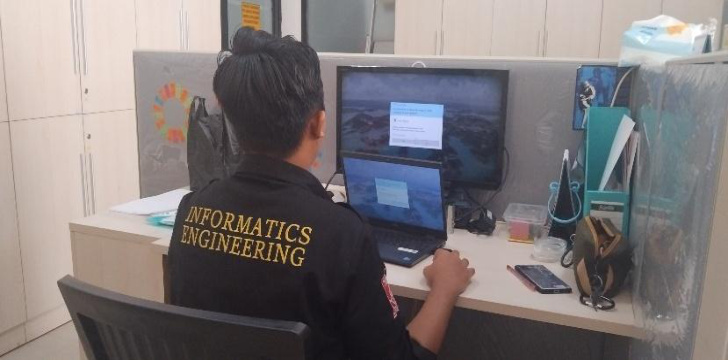
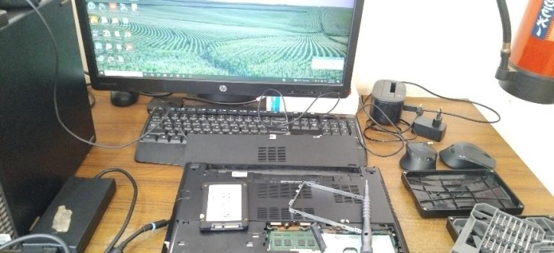
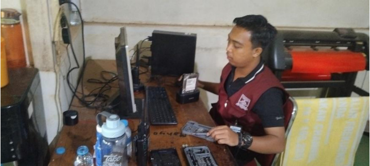
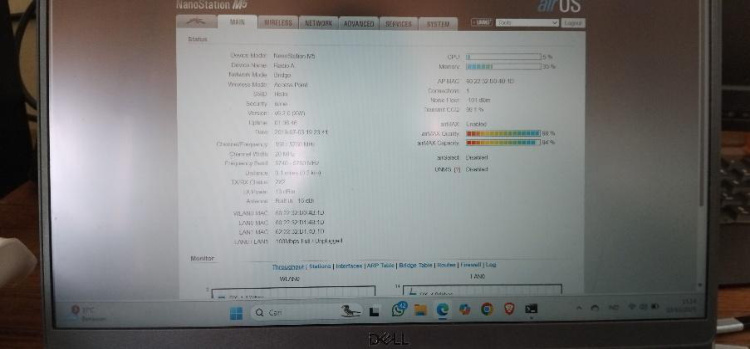
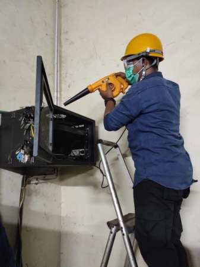
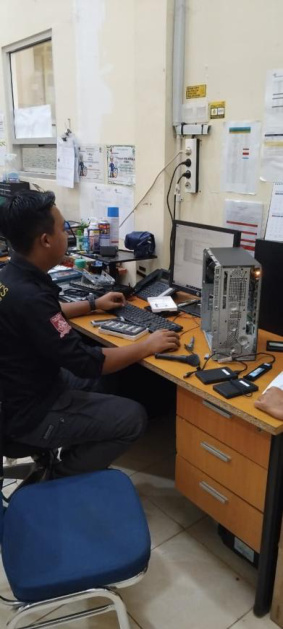
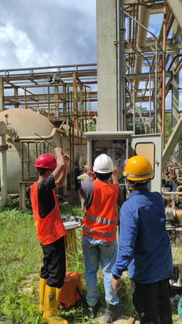
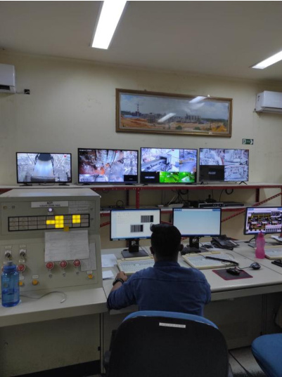
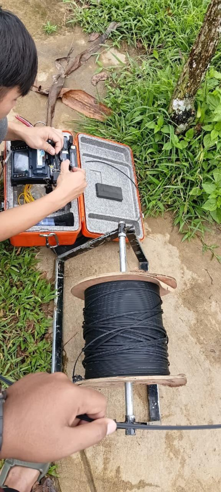
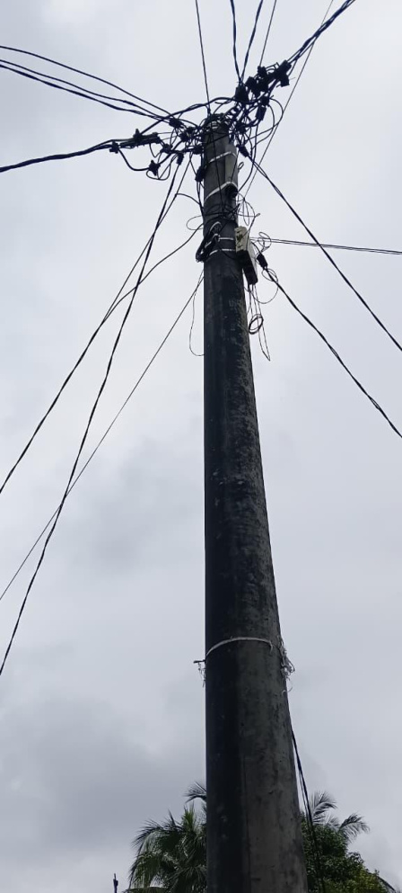
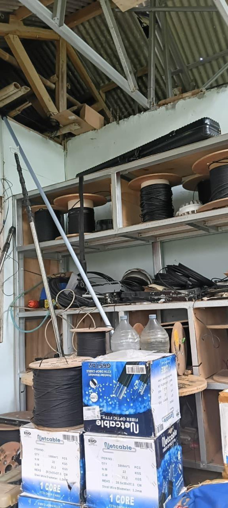
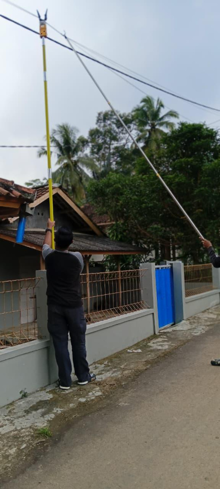
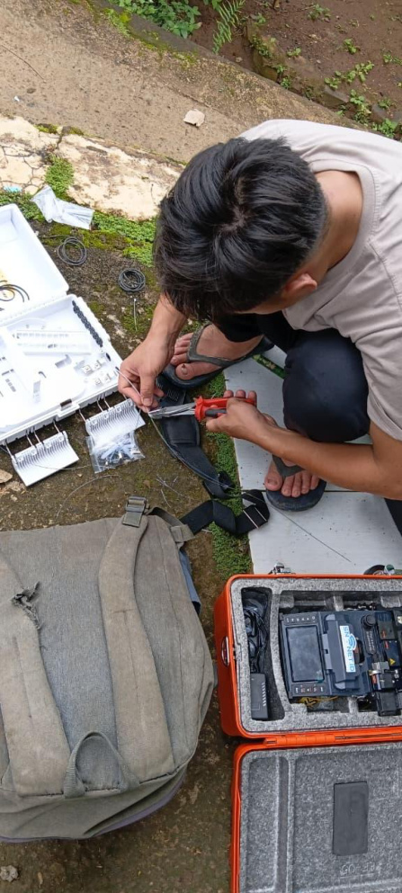
Computer & laptop troubleshooting, software installation, Windows, recovery data, Microsoft Office, technical support, user support.
MikroTik, LAN, network troubleshooting, network monitoring, basic network configuration, Point to Point networking.
Fiber optic, FTTH, ODP, splicing, jalur distribusi, router WiFi, pengujian koneksi, maintenance.
PHP, HTML, CSS, JavaScript, MySQL, Bootstrap, Visual Studio Code.
GIS, Web-GIS, Leaflet.js, spatial mapping, ODP mapping, fiber optic route mapping, data pelanggan dan gangguan.
Linux/Kali Linux, WordPress, Canva, Microsoft Word/Excel/PowerPoint, Waterfall, functional testing, usability testing.
MicroTik Certified Network Associate
18 July 2026 • Credential ID 2607NA9853Core Skills Test • CEFR C1 Advanced
Score 518 • 25 June 2026Certificate of Completion
19 August 2026Certificate of Completion
22 January 2024Grade B
4 July 2026Universitas Nusa Putra • IPK 3,66/4,00
2022–2026Pengalaman non-teknis yang memperkuat kemampuan pendataan, ketelitian, pelayanan masyarakat, kerja lapangan, dan tanggung jawab operasional.
Petugas Pemutakhiran Data Pemilih untuk kegiatan pendataan pemilih. Berkontribusi dalam pekerjaan lapangan yang membutuhkan ketelitian, komunikasi dengan masyarakat, dan pengelolaan data.
Terlibat dalam pelaksanaan kegiatan di Tempat Pemungutan Suara, mendukung ketertiban proses dan pelayanan pemilih sesuai tugas yang diberikan.
Pengalaman praktik kerja lapangan di lingkungan pelayanan administrasi kependudukan. Detail tugas akan disesuaikan dengan kegiatan yang benar-benar kamu lakukan selama PKL.
Universitas Nusa Putra • September 2023. Membuat sertifikat kelulusan peserta MABIM, membantu pembuatan akun WordPress, dan mendukung kelancaran jaringan kegiatan.
Februari 2024. Membimbing calon anggota, memberikan materi, serta membantu proses penilaian dan kelulusan.
Terbuka untuk peluang kerja di bidang IT Support, networking, ICT, FTTH, GIS, data administration, dan peran operasional yang relevan.
Dokumentasi kegiatan pada halaman ini berasal dari laporan internship/PKL yang disusun oleh Dean Satria Marpaung. Sebelum dipublikasikan secara luas, pastikan penggunaan foto dan materi perusahaan sesuai dengan kebijakan perusahaan terkait kerahasiaan informasi.